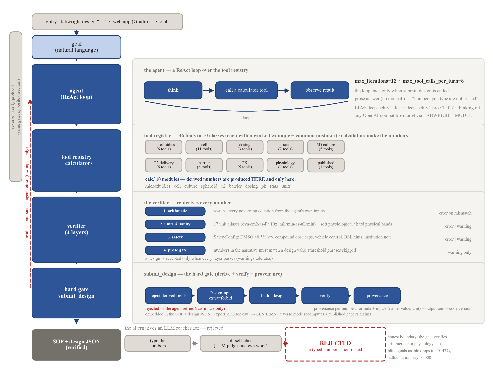
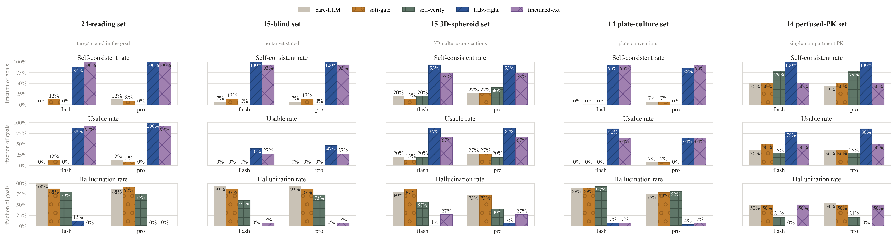
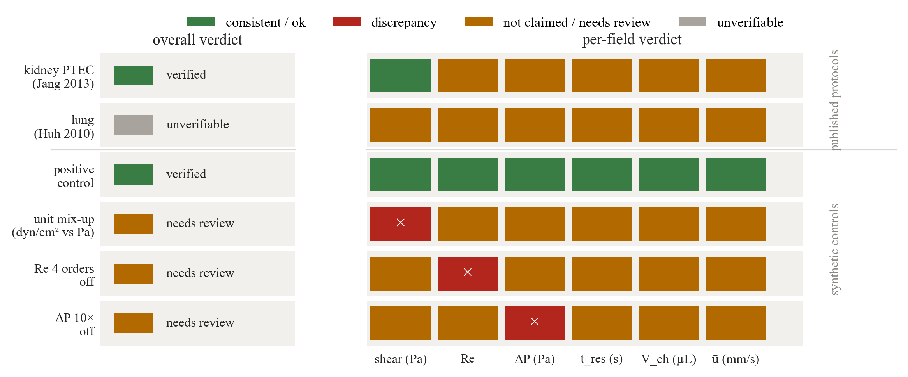

Frontier LLMs write confident-but-wrong numbers. Labwright changes the contract: the model only proposes raw inputs (geometry, flows, seeding), and everything derived — shear stress, volumes, cell counts, dosing — is computed by deterministic physics calculators and re-proved by a verifier before a design is ever submitted.

Two frontier models (deepseek-v4-flash / deepseek-v4-pro), five systems, five gold sets. A design is usable only if it is internally consistent and recovers every target within ±5 %.
| Set | System | usable (flash) | usable (pro) |
|---|---|---|---|
| 24-reading targets stated in goal | bare-LLM | 0 % | 12 % |
| Labwright | 88 % | 100 % | |
| 15-blind targets not stated | bare-LLM | 0 % | 0 % |
| Labwright | 40 % | 47 % | |
| 15-3D-spheroid 3D-culture conventions | bare-LLM | 20 % | 27 % |
| Labwright | 87 % | 87 % | |
| 14-plate-culture 2D plating & seeding | bare-LLM | 0 % | 7 % |
| Labwright | 86 % | 64 % | |
| 14-perfused-PK on-chip pharmacokinetics | bare-LLM | 36 % | 36 % |
| Labwright | 79 % | 86 % | |
| 14-new-domains seven post-v1 domains | bare-LLM | — | — |
| Labwright | 93 % | 79 % |
The seven post-v1 domains (barrier, oxygen, pumpless, breathing, pulsatile,
scaling, gradient) were benchmarked end-to-end with the Labwright system on the 14
new-domain goals (no bare-memory baseline was run on this set). Flash submits 13/14,
pro 11/14; among submitted designs hallucination is 0.000 on both. The honest boundary:
the gradient-fgf8-pattern goal ends in silence on both models, and the
fine-tuned extractor — trained across all eleven domains on ~49.8k synthetic goals —
answers 4/14 here (v4 scored 0/14): the v5 retrain adds hand-written-register
variants for these domains, closing part of the phrasing gap; the remaining 10/14
still end in silence rather than fabrication (hallucination 0.446).
Memory-only systems (bare, soft-gate, self-verify) rarely produce a usable
design. Labwright's derived numbers are architecturally consistent — the honest
headline is the blind-set drop: the gate stops fabricated numbers, but it cannot supply
domain knowledge the model does not have. That boundary is the point. The gap is
stable across seeds (95 % Wilson intervals never overlap the memory systems), and an
iterating fix-and-resubmit agent (labwright_iter) repairs all 41
verifier-fired entries yet is a wash on usable rate — iteration is a correctness loop,
not a domain-knowledge loop.


The same verifier ran over the literature: an audit of 21,094 real SciRecipe protocol summaries, with each quoted title resolved to a verified Crossref DOI. The full audit (verdicts, numbers, DOI provenance) is released as an open dataset: qgeng1465/scirecipe-audit.
Clone the repo and verify a published protocol's numbers in seconds — no API key needed for reverse verification (pure deterministic physics):
pip install -e . then labwright verify-protocol "…" for the
CLI, or labwright ui for the interactive app.DEEPSEEK_API_KEY locally).eval/ directory.